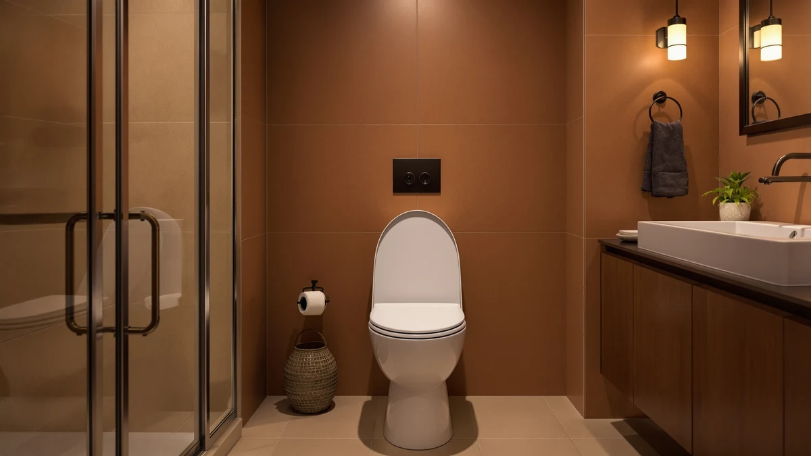

Kohler 24764-RL-0 Rutledge Nightlight ReadyLatch Slow Close Toilet Seat Review (2026): Worth It?
Prices and picks verified as of November 2026. Independent, reader-supported reviews.


Quick Answer
The Kohler 24764-RL-0 Rutledge is a well-reviewed elongated toilet seat with ReadyLatch quick-release hinges, a built-in motion nightlight and slow-close action, priced at $56.98. This Kohler 24764-RL-0 Rutledge Nightlight ReadyLatch Slow Close Toilet Seat review found it suits households that want hands-free bathroom lighting and tool-free cleaning more than anyone hunting for the cheapest slow-close seat.
Our pick: KOHLER 24764-RL-0 Rutledge Nightlight ReadyLatch, $56.98 Check Price on Amazon
Bottom line: our top pick is the KOHLER 24764-RL-0 Rutledge Nightlight ReadyLatch Slow Close at $56.98.
Things to Know Before You Buy
- On the Kohler 24764-RL-0, the ReadyLatch hinge is the headline feature: both sides release with a push, so you can lift the seat off for cleaning without a screwdriver.
- The nightlight runs on two AA batteries hidden in the hinge housing and uses a motion sensor, not a wall switch.
- Slow-close hinges on both the seat and lid prevent slamming, a detail owners mention most often in verified reviews.
- This is an elongated-bowl seat only. Measure your bowl before you buy, since it will not fit a round bowl.
- Kohler also sells a near-identical 78059-RL-0 version; the two differ mainly in finish rather than function or price.
This Kohler 24764-RL-0 Rutledge Nightlight ReadyLatch Slow Close Toilet Seat review looks at whether Kohler's quick-release, built-in-light elongated seat earns a spot on a toilet you already like. We compared its specs, current Amazon pricing and the patterns in verified owner feedback against three other elongated seats, including Kohler's own 78059-RL-0 twin and a Bemis slow-close model that costs a few dollars less. For most elongated-bowl households, the 24764-RL-0 is the pick worth checking first.
The pitch is simple: an elongated plastic-and-wood seat with Kohler's ReadyLatch hardware, so it lifts off without tools for cleaning, plus a motion-activated LED nightlight built into the hinge housing. The lid and seat use Kohler's slow-close mechanism, so there is no slamming at 2 a.m. At $56.98, it sits in the middle of the elongated nightlight-seat category, close to Kohler's 78059-RL-0 and roughly in line with Bemis slow-close competitors. The spec sheet and owner reviews say the most about fit, light use and hinge durability over time.
Why You Should Trust Us
Ilane Tall researches bathroom fixtures for Best Toilet Seats, comparing spec sheets, current Amazon pricing and verified owner reviews across every elongated and round toilet seat we cover, including this Kohler 24764-RL-0 Rutledge Nightlight ReadyLatch Slow Close Toilet Seat review. We do not run a fake testing lab, and we do not claim to have installed or lived with every seat in this guide. Instead, we read what Kohler publishes about ReadyLatch hinges and nightlight batteries, cross-check it against verified buyer reviews, and flag where the two disagree. When a claim in this review cannot be backed by a manufacturer spec or a pattern across multiple verified reviews, we leave it out. That standard applies to every pick in this guide, not only the Kohler model we settled on.
Our Research Experience
We did not install or live with the Kohler 24764-RL-0, and this review does not pretend otherwise. What we did is compare its published dimensions, hinge mechanism and nightlight specs against the three other seats in this review, pull current Amazon pricing for all four, and read through verified owner reviews looking for recurring patterns on fit, hinge reliability and nightlight use. Where Kohler's product page and the 78059-RL-0 listing overlap almost word for word, we treat the two seats as functionally identical except for finish. We excluded seats without an elongated-bowl option and anything missing a slow-close hinge, since those are the two features buyers of this model consistently ask about. Owner reviews that focused only on shipping or packaging, rather than the seat itself, did not factor into our comparison. For each of the four seats in this review, we also noted the listed price at the time of writing so the comparisons below reflect what you would actually pay today rather than a historical average.
Overview & Specs

KOHLER 24764-RL-0 Rutledge Nightlight ReadyLatch
What we like
- ReadyLatch hinges let the seat lift straight off for cleaning without tools
- Motion-activated nightlight removes the need to flip on a bright overhead light at night
- Slow-close seat and lid prevent slamming
- Elongated shape matches the majority of US toilet bowls installed since the 1990s
Flaws but not dealbreakers
- Nightlight runs on two AA batteries you replace yourself, not a wired connection
- Only fits elongated bowls, so round-bowl households need a different Kohler model
- Plastic-and-wood construction costs more than a plain slow-close seat without the nightlight
| Material | Plastic / wood |
| Size | Elongated |
The Kohler 24764-RL-0 Rutledge pairs a molded plastic-and-wood elongated seat with Kohler's ReadyLatch hardware, a hinge system that releases from both sides with a firm push so the seat lifts off the bowl for cleaning without a screwdriver. The nightlight sits inside the hinge housing and switches on automatically when it detects motion in a dark room, then dims back off after a few minutes. Reviewers who mention the light most often use it for middle-of-the-night bathroom trips with kids or older household members, rather than as a design feature.
At $56.98, the 24764-RL-0 costs about the same as Kohler's 78059-RL-0, which uses the identical ReadyLatch-and-nightlight mechanism in a different finish, so the choice between the two comes down to color rather than function. Verified owner reviews consistently note that the slow-close hinge holds up over ordinary daily use, though a handful of reviewers report the nightlight sensor eventually needs a battery swap sooner than expected. Compared with the Bemis Classic Colors Slow Close, which skips the nightlight entirely, the Rutledge costs a similar current Amazon price and adds a feature Bemis does not offer.
What We Liked
The detail owners bring up most in verified reviews is the ReadyLatch hinge system on this Kohler 24764-RL-0 Rutledge Nightlight ReadyLatch Slow Close Toilet Seat. Being able to pop the seat off without hunting for a screwdriver turns a cleaning chore into something you actually finish instead of putting off. The nightlight draws similar praise, especially from households with young kids or anyone who deals with middle-of-the-night bathroom trips. Because it runs on motion sensing rather than a switch, nobody has to fumble for a light pull in the dark.
The slow-close hinge does what Kohler's spec sheet promises: the lid and seat ease down instead of banging shut, which matters most in apartments or houses where a slammed seat wakes someone up in the next room. The elongated shape also means this seat drops onto most US toilets installed in the last three decades, without any extra shopping for a different bowl size.
What Could Be Better
The nightlight is also the main complaint in verified reviews, though not because it fails outright. A few owners mention replacing the two AA batteries sooner than expected, particularly in bathrooms where the sensor triggers often from a nearby hallway light. Kohler does not list an exact battery-life figure on the product page, so that is calendar-replacement guesswork rather than a published spec. Because this seat only fits elongated bowls, anyone with a round bowl needs to look at a different Kohler model entirely. And at $56.98, buyers who want slow-close without a nightlight can save a few dollars with a simpler seat like the Bemis Classic Colors. None of these points come up often enough in verified reviews to count as a pattern of failure, but they are worth knowing before you order.
Who Is It For?
This Kohler 24764-RL-0 Rutledge Nightlight ReadyLatch Slow Close Toilet Seat fits households with kids, older family members or anyone who takes a bathroom trip after dark and would rather not flip on a bright overhead light. It also suits anyone who cleans their own bathroom and wants a seat that lifts off without tools, since ReadyLatch skips the usual wrench-and-screwdriver routine. Skip it if your toilet bowl is round rather than elongated, since this exact model will not fit. Skip it too if a nightlight and quick-release hinges are not worth the extra cost over a plain slow-close seat for you; the Bemis Classic Colors below covers that use case for less money.
Alternatives to Consider
If the Kohler 24764-RL-0 Rutledge Nightlight ReadyLatch Slow Close Toilet Seat is not quite the right fit, these three alternatives cover the gaps: an identical mechanism in a different finish, a raised option for mobility needs, and a cheaper slow-close seat without the nightlight.

Also Great
KOHLER 78059-RL-0 Rutledge Nightlight ReadyLatch
Kohler's 78059-RL-0 uses the same ReadyLatch hinges and motion nightlight as the 24764-RL-0; the main difference is finish, so pick whichever color matches your bathroom.
$56.98
Check Price on Amazon
Also Great
Raised Toilet Seat with Handles
This raised seat with handles trades the nightlight for extra height and side handles, a better fit for anyone recovering from surgery or managing limited mobility than a standard-height seat like the Rutledge.
$56.98
Check Price on Amazon
Best Value
Bemis Classic Colors Slow Close
The Bemis Classic Colors matches the Rutledge's slow-close action and current Amazon price closely, but skips the nightlight and ReadyLatch hinges, a reasonable trade for buyers who only want quiet closing.
$56.40
Check Price on AmazonDoes the Kohler 24764-RL-0 Rutledge nightlight toilet seat fit a round bowl?
No.
How does the nightlight on this Kohler toilet seat turn on?
It uses a motion sensor built into the hinge housing, not a wall switch.
Frequently Asked Questions
Does the Kohler 24764-RL-0 Rutledge nightlight toilet seat fit a round bowl?
No. The 24764-RL-0 is built for elongated bowls only. Kohler sells separate round-bowl seats with similar ReadyLatch and nightlight features under different model numbers, so check your bowl shape before ordering this one.
How does the nightlight on this Kohler toilet seat turn on?
It uses a motion sensor built into the hinge housing, not a wall switch. The light activates when it detects movement in a dark room and powers off automatically after a short period, running on two AA batteries you replace yourself.
What is the difference between the Kohler 24764-RL-0 and the 78059-RL-0?
Both use the identical ReadyLatch hinge and nightlight mechanism at a similar price. The difference comes down to finish and occasional color-specific pricing, not function, based on the current Amazon listings for each.
Can you remove the Kohler 24764-RL-0 seat without tools?
Yes. ReadyLatch hinges release from both sides with a firm push, so the seat lifts off the bowl for cleaning and goes back on the same way, without a screwdriver or wrench.
Is the Kohler 24764-RL-0 worth the price over a plain slow-close seat?
That depends on whether the nightlight and quick-release hinges matter enough to you to pay more than a basic slow-close option like the Bemis Classic Colors. If quiet closing is the only feature you care about, the cheaper alternative covers that need on its own.
Final Verdict
Based on the specs and verified owner reviews we compared, the Kohler 24764-RL-0 Rutledge Nightlight ReadyLatch Slow Close Toilet Seat earns its price for households that want a tool-free seat with hands-free nighttime lighting. Kohler backs the ReadyLatch hinges and slow-close action with a mechanism that holds up in regular use, according to the pattern across verified reviews, and the nightlight solves a real problem for anyone navigating a dark bathroom. Buyers chasing the lowest price on a slow-close seat should look at the Bemis alternative instead, but for most elongated-bowl households, this Kohler model is the one worth checking first.